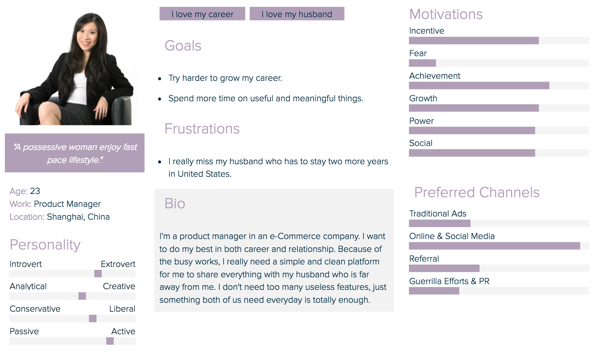
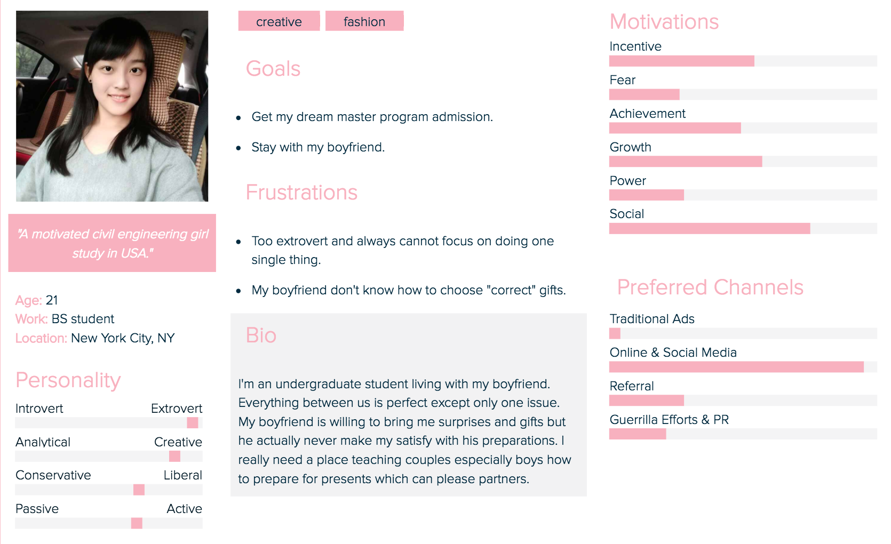
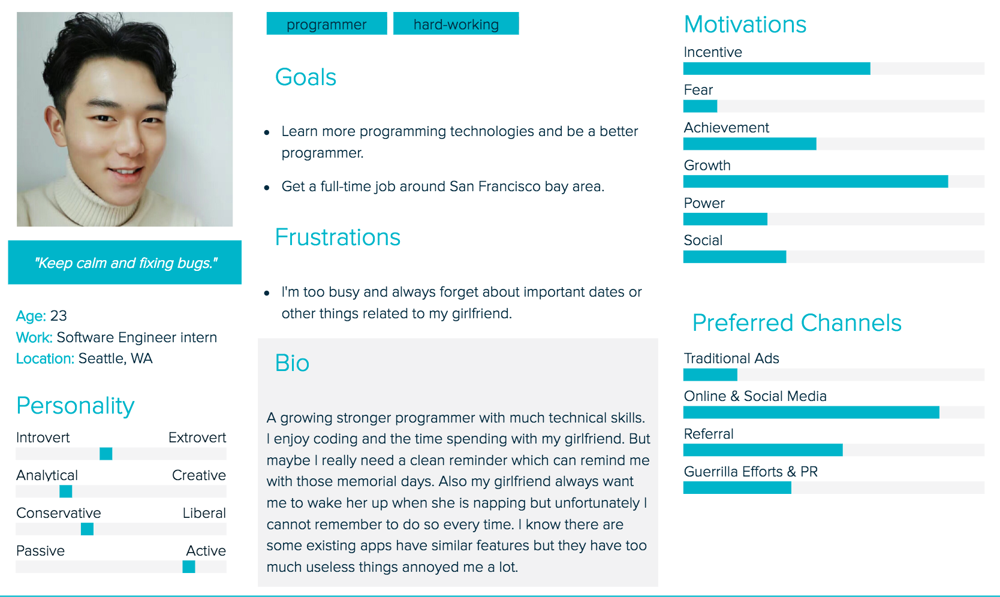
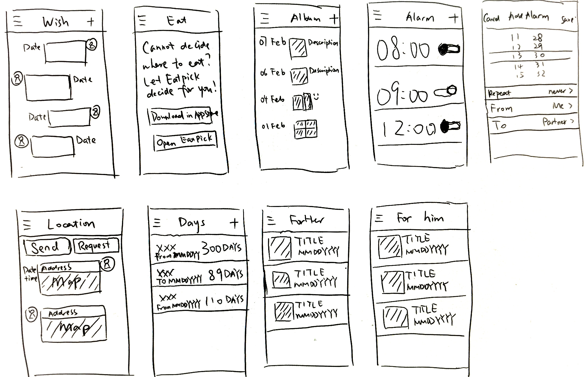
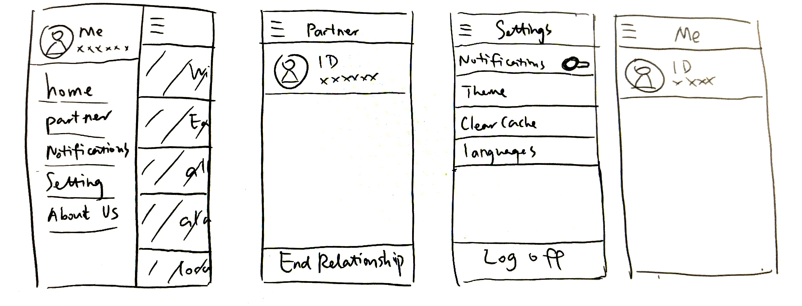
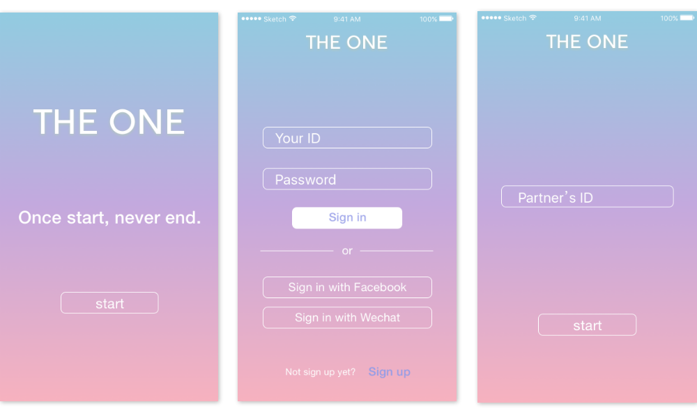
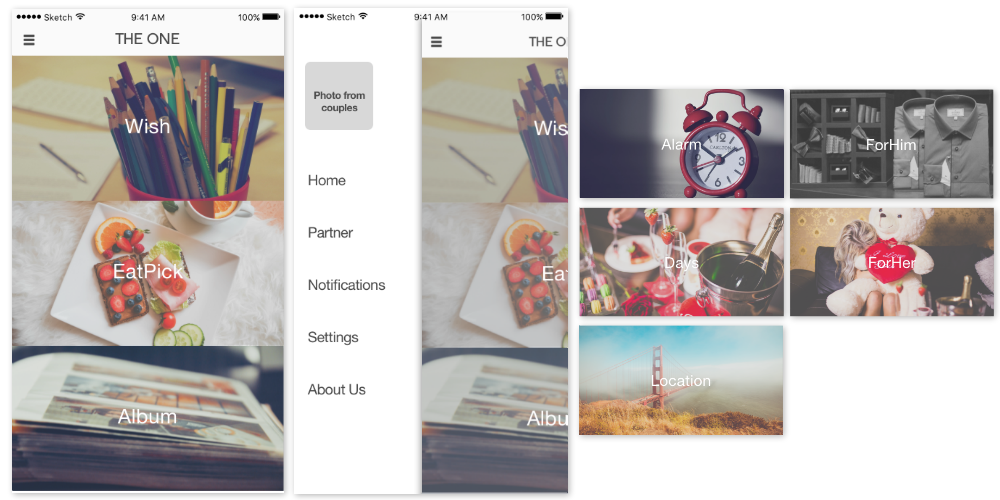
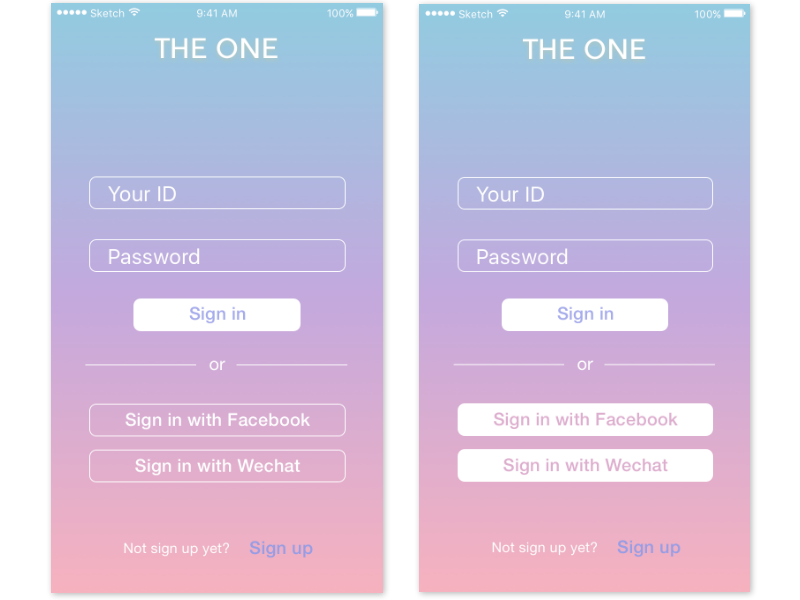
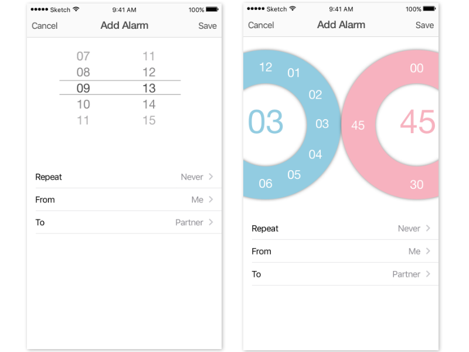

TheOne
iOS/Web App Design
Dec 2016-present
An simple and clean app for couple only.
Features includes:
- Wishlist - Remote Alarm Clock
- EatPick - Days Counting
- Private Album - Location Sharing
- ForHim - ForHer
Inspiration
Nowadays there are numerous couple-oriented apps in worldwide application stores with various features.
After doing a marketing research on 30 couples in different types, I noticed that, most couples only need a
few key features such as date reminder, remote alarms, etc.
Also I realized that users complain a lot about those useless in-app purchase and endless ads.
So I decided to make a brand new app, which has only useful features and “clean” interfaces with my boyfriend
who can help me with iOS developing to satisfy most users' demands.
Finally, let me talk about the name. “THEONE” represents not only every user has only one “friend” in this app,
but also the “fatal” person in the user’s life. The slogan on the welcome page, “Once start, never end” implies
that we hope every couple starting an relationship will never end it, and also every user starting using our app
will never stop using it.
Competitive Analysis
| |
TheOne |
Couple |
XiaoEnAi |
| Overview |
A couple-focus app containing clean and useful features only. |
A more intimate way to share your life with your favorite person. |
A platform for couples to share their lives and play games together. |
| Competitive Adventage |
No ads, no distractions. Keep only commonly and mostly needed features for couples. |
Couples can be close even when apart with ThumbKiss. |
Couples can do many things together such as keeping a baby, playing games and buying gifts. |
| Target Market |
Both long distance and living closely couples who prefer clean, simple and efficient features. |
Both long distance and living closely couples who prefer lot’s of funny features. |
Both long distance and living closely Chinese couples who want to play games together. |
| Weakness |
Contains only eight features, may be not enough when users want to try something new. |
Many features may be used only once or twice. |
Too much boring games and advertisements. |
Persona
Before starting this project, I did a marketing survey on 30 couples from different countries, ages,
jobs and generated the following three personas which can represent our target users most clearly:



Prototype
I designed both iOS and Website of TheOne but our web app still need more considerations so I only display
iOS related design here.
First of all, I designed the welcome and login/register interface:

And then I started the home page design which took me a while. I provided four types of different styles of the
home page listed belows:
I tested these four designs on 10 couples in different types: some of them were together for only
a few days, some of them had been together for more than four years; some of them lived with partners
everyday but some others were staying in a long-distance relationship for several years.
As a result, 7 couples picked the third design, which is almost a dominant result. So I decided to use it as my home page design.

Then I just started feature wireframing:

Now I’m trying to make brief introduction to the design behind every feature seperately.
- The first one is wish list, which is quite straightforward. Users can add any wishes into the wish list in “dialog”
style, which is easy to recognize which wish list belongs to whom.
- The second one is EatPick, which is another app I designed. It’s a common situation that couples who live
together everyday always have trouble with deciding where to eat. Sometimes they are bored of cooking at
home and want to eat outside but cannot make decisions picking one from numerous restaurants. In THEONE.
this feature will simply lead users to download and use EatPick to solve this problem.
- The third one is private album. Here users can upload photos and descriptions which are only visible between
couples themselves.
- The fourth one is remote alarm clock. If users are far away from their partners but still need to wake him/her up
in the morning or be waken by partners at some time, they can just set an alarm clock. For example one user
set an alarm clock at 08:00 am to wake his girlfriend. When it is 08:00 am, THEONE will send this user an
reminder of waking up his girlfriend, so that he can do this within one click and will never miss it.
- The fifth one is location sharing. It has two button: send and request. Users can send the current location clicking
“send” button and request his/her partner to send location clicking “request” button.
- The sixth one is days reminder. Girls are always complaining about their boyfriends never remember their
anniversaries or other significant days. So we add this feature counting days for couples. When those important
days are coming, both users will get a reminder.
- The last two are trends about what he/she likes. Girls will find out what their boyfriends or husbands like in
ForHim feature. Boys will find out what their girlfriends or wives like in ForHer feature. With the help of these two
features, it’s much easier for users to choose gifts or prepare surprises for their partners.

The wireframes above are other interface designs. But in order to make the side menu more concise, I changed
the personal information on the top part to place to a place holding a photograph of couple and moved personal information
into setting page.
One more thing need to be mentioned is: there is an “End
Relationship” feature. If users really want to break up with their partners, they can find this feature in Partner
Information tab. But we hope users will never use this feature!
After completing wireframes, I created mockup in Sketch App. I choose blue and pink as major
colors besides white in my app design.

What I list below are the home page, side menu, and other features that need users to scroll down to view:

Finally here come my eight mockups of feature design:

Testing
After the iOS developer created the prototypes, I tested them on those 10 couples I mentioned before and gained lots of useful results from them. I want to talk about login interface and alarm clock here.
After uploading my login interface to Dribbble, I got a comment that maybe solid button for sign in with Facebook
and Wechat is better. So I did an A/B testing contained original version and solid-style button version
as follows:

As a result, the right one is the winner. Testers all agree that “sign in with Facebook” and “sign in with Wechat” in
the left original design looks like input area.
I also provided two design of the alarm clock setting interface:

The Add Alarm interface has four main parts: setting time, repeat, from whom and to whom. At first I thought
users may find “from whom” and “to whom” hard to understand, or the way setting alarm clock in the right
design may be hard to understand. But it seemed that all testers could figure out how to use and most of them
preferred the right design.
Final
Based on my testing results, after having some more considerations and discussions with my advisers and developer, I finally
finished THEONE iOS app prototype design. And the iOS developer is working on it now. I displayed some features belows: